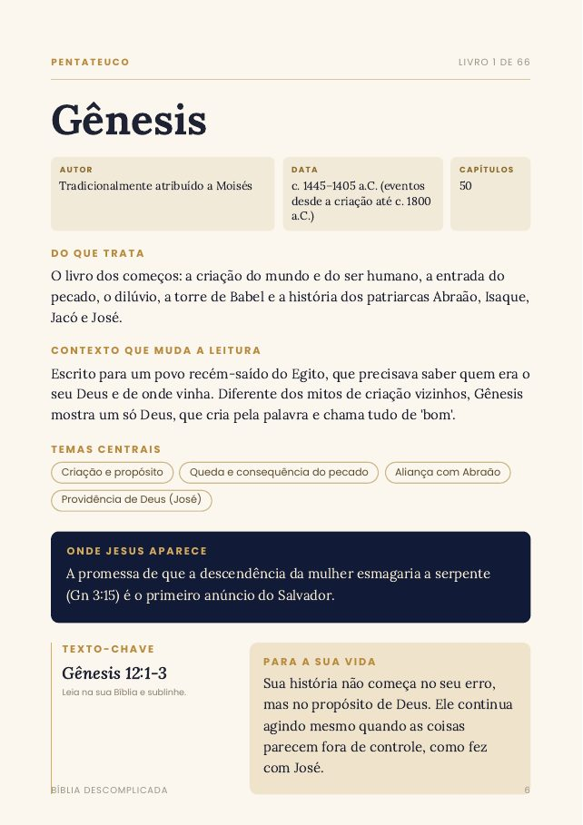
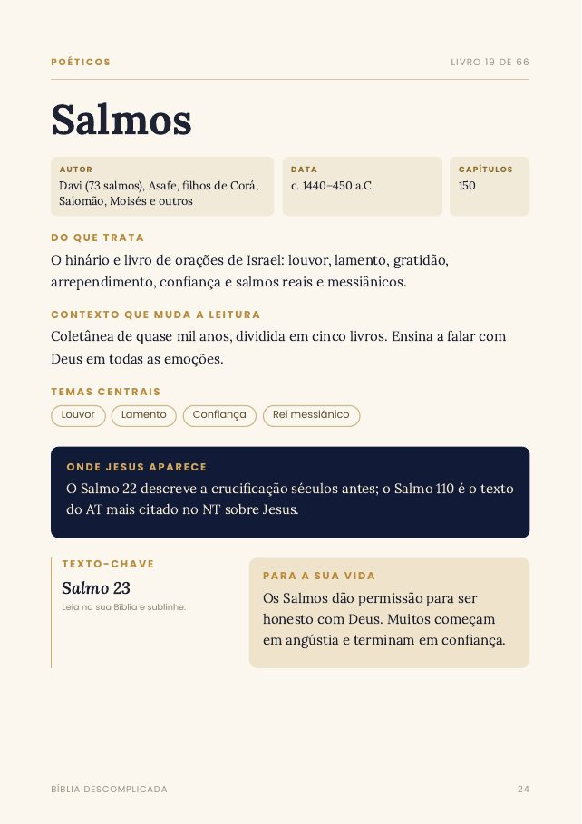
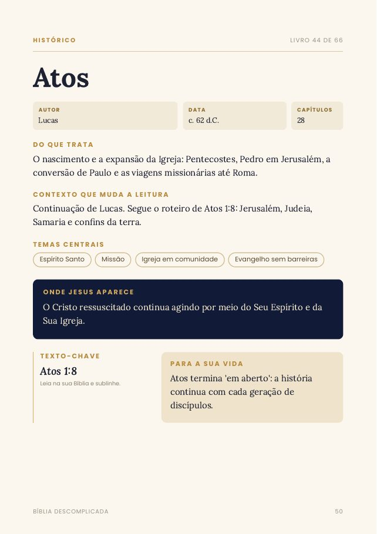

O problema quase nunca é falta de fé. É falta de contexto. A Bíblia Descomplicada mostra, em 1 página por livro, tudo o que você precisa saber antes de abrir cada um dos 66 livros.
Gênesis e Êxodo vão bem. Aí chega Levítico, Números, os profetas... e a leitura para.
Nomes, reis, povos e épocas se misturam. Sem saber o contexto, o texto parece solto.
Começar do Gênesis? Dos Evangelhos? Sem um mapa, é fácil se perder numa biblioteca de 66 livros.
Cada página foi escrita para ser lida em 3 minutos, antes de você abrir o livro na sua Bíblia. Linguagem simples, sem termos difíceis, útil para qualquer denominação.



Vai ler Romanos? Abra a página de Romanos no guia.
Em 3 minutos você sabe quem escreveu, por quê e o que procurar.
Leia o texto com outros olhos, entendendo o que antes passava batido.
Se nos primeiros 7 dias você achar que o guia não te ajudou a entender melhor a Bíblia, é só pedir o reembolso escrevendo para renandavilamoreira11@gmail.com. Você recebe 100% do valor de volta.
Assim que o pagamento é confirmado, você recebe o link de acesso no e-mail informado na compra. Pelo PIX, isso leva poucos minutos.
Sim. O guia traz o contexto de cada livro e indica as referências; você lê o texto na tradução que preferir.
Não. O conteúdo segue a tradição cristã mais aceita sobre autoria e datas e é útil para cristãos de qualquer igreja.
Não, é um PDF digital. Você pode ler no celular, no computador ou imprimir.
Não. É um pagamento único e o material é seu.